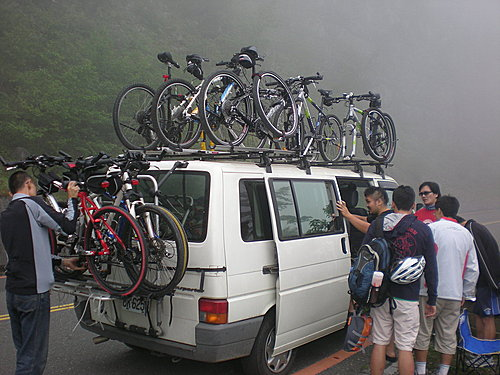

亞洲飛鷹已經為河東獅的2008探索新中橫活動，完成了一篇生動的報導，而很高興小超也能完成本次探索新中橫72公里賽程，並在沿途留下美麗的照片，小超把其中具代表性的照片和各位分享
------------------------------------------------------------------------------------------------------------------------------------
我們努力的目標，塔塔加停車場，海拔2610公尺
河東獅友出發前合影
幕後大功臣，補給車主人林大哥
將九輛腳踏車放到補給車上，準備前往水里過夜
以下為本次永不放棄探索新中橫河東獅車友介紹
帥哥小揚─負責壽畫本次活動，居功厥偉。小揚除體力一流外，毅力更是驚人，下次統一杯鐵人三項，你一定可以看到這位帥哥的身影！
小超─雖然很累，但拍照時，還是要振作起來，一副氣定神閒的模樣！
酷哥小泓─河東獅黑馬，最喜歡以45度側臉入鏡
小東─41K補給站
韻中、阿祥、小揚於41公里處合影，雖然騎了41K，還是一樣氣定神閒！
阿祥─於塔塔加留下成功自信的笑容

新新人類─亞洲飛鷹、品揚居士
我們在水里所住宿的飯店，據亞洲飛鷹描述界於鬼屋與違建之間，但幸好JAMES大哥為我們花心思張羅，讓我們能享受兩人一間的雅房，擁有還算舒適的賽前之夜（但據祥益及小揚說有跳蚤）
蚤））
在雲霧中騎車，有種騰雲駕霧的感覺！
完成賽事後，河東獅友於新中橫夫妻樹合照
完賽後於夫妻樹前享受泡麵（最近鏡頭者為阿益，河東獅的冠軍）
完賽後，將腳踏車放到補給車上，再經由阿里山返回甜蜜的家


 ,雖然省一點
,雖然省一點